GUI Agent 在公安业务流程自动化中的应用
技术分享报告
背景与需求
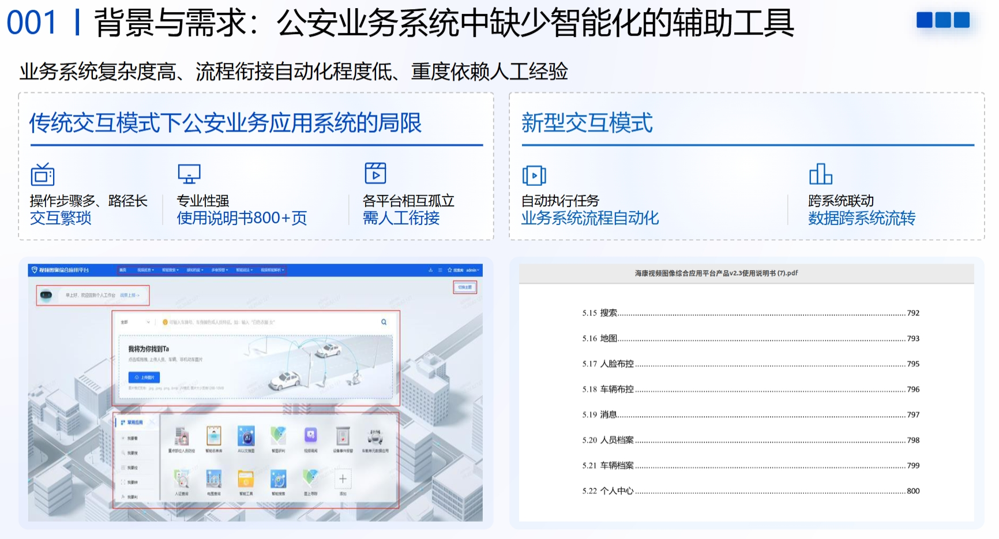
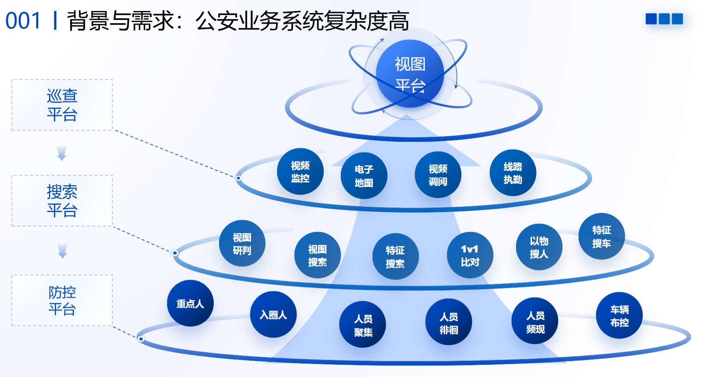
传统的流程自动化
- 目前主要依赖RPA/浏览器自动化，规则驱动。
- 发展趋势：基于大模型的 GUI Agent，数据驱动。
RPA
流程自动化的典型产品形态为 RPA (Robotic Process Automation)，通过模拟人类在计算机界面上的操作逻辑，在不改变企业现有 IT 架构的前提下，实现跨系统、跨平台的业务衔接，能够极大地提升数据流转的效率与精准度。
| 时间 | 里程碑 | 说明 |
|---|---|---|
| 2005年 | UiPath | UiPath公司成立。全球RPA行业领军企业，提供自动化平台。帮助企业处理重复性办公任务。市值70亿美元。 |
| 2012年 | RPA 术语提出 | Prism 公司正式提出RPA术语。该行业进入黄金期，大量金融企业使用RPA系统处理银行账单与表格。 |
| 2019年 | 国产 RPA | 国产RPA产品影刀RPA诞生。广泛应用于电商行业，完成自动上架商品、批量抓取竞品价格等任务。 |
浏览器自动化
RPA软件的核心技术之一是浏览器自动化技术，用于模拟人类用户在Web环境下的交互行为，实现复杂业务流程的自动化处理。
| 时间 | 里程碑 | 说明 |
|---|---|---|
| 2004年 | Selenium | 成立于2004年，老牌Web自动化工具，目前网页自动化测试及任务处理领域最权威的全球行业标准。 |
| 2017年 | Puppeteer | 2017年由谷歌推出。基于Chrome DevTools Protocol (CDP)，能够以极高的效率和稳定性控制 Chrome 浏览器。 |
| 2020年 | Playwright | 2020年，由微软发布，由原 Puppeteer 团队打造，支持跨浏览器的统一自动化，解决多窗口、异步加载等待等痛点。 |
| 2020年 | DrissionPage | 由国内开发者发布。极大地简化了语法的复杂度。 |
Python源码示例
# 选中摄像机
time.sleep(2)
elements = page.eles('.el-tree-node__content')
for element in elements:
if place_str in element.text:
element.ele('.el-checkbox').click()
break
# 点击确定按钮
time.sleep(1)
page.ele("text=确定").parent().click()
log('完成设置地点')
# 设置开始时间
element = page.ele('css:input[placeholder="开始时间"]')
element.click()
element.run_js('this.select();')
element.input(start_time_str)
log('开始时间设置为：{}'.format(start_time_str))
# 设置结束时间
element = page.ele('css:input[placeholder="结束时间"]')
element.click()
element.run_js('this.select();')
element.input(end_time_str)
log('结束时间设置为：{}'.format(end_time_str))
# 点击查询按钮
element = page.ele('.el-button primary_search-but el-button--primary')
element.click()
log('已点击查询按钮，等待数据加载...')
time.sleep(10)
# 点击 表格模式 按钮
log('开始点击"表格模式"按钮')
try:
page.ele('text= 表格模式 ').click()
except Exception as e:
page.get_screenshot()
log(f"点击表格模式失败: {e}", "ERROR")
return
time.sleep(1)
# 点击 右侧详情 按钮
page.ele('text= 右侧详情 ').click()
time.sleep(1)
# ==================== 3. 遍历所有页面抓取数据 ====================
old_src = 'palceholder' # 常出现的问题是，如果前面对行的点击没有生效，则抓拍照是旧的。因此需要进行循环判断抓拍照是否被更新。为此就要初始化一个src
while True:
# 处理当前页面
persons = page.eles('.el-table__row ') + page.eles('.el-table__row current-row') + page.eles('.el-table__row')
log('当前页面共发现 {} 条人员记录'.format(len(persons)))
for person_idx, person_row in enumerate(persons):
log('----------- 处理行人 {} ------------'.format(person_idx + 1))
while True:
page.actions.click(person_row.ele('.el-table_1_column_2 ')) # 这句话很关键。直接点击person_row不行，点击person_row的第一个元素也不行。这是魏鹏帮忙试出来的。
time.sleep(3)
img_element = page.ele('xpath=//img[@class="iu-img-view__img"]')
src = img_element.attr('src')
if src != old_src:
old_src = src
break
log(f"图片源地址: {src}", "DEBUG")
image_path = '{}.png'.format(src.split('/')[-1])
if os.path.exists(image_path):
os.remove(image_path)
page.download(src, verify=False, rename=image_path)
is_caught = ocr_image(image_path, engine)
if not is_caught:
log('OCR检测结果：未发现违法抓拍标记，跳过')
continue
else:
log('OCR检测结果：确认存在违法抓拍标记！')
# 获取抓拍地点和时间
place_name = '未知地点'
place_element = person_row.ele('css=td.el-table_1_column_3 .cell .plate span')
if place_element:
place_name = place_element.text
place_name = re.sub(r'\s+', '', place_name)
time_str = '19900118092016'
time_element = person_row.ele('css=td.el-table_1_column_2 .cell .plate span')
if time_element:
time_str = time_element.text
time_str = re.sub(r'\D+', '', time_str)
"""START: 获取姓名与身份证号"""
person_name = "未知身份"
id_number = "未知身份证号"
# 寻找查看档案按钮
archive_button = person_row.eles('css:button[title="查看档案"]')
# 如果找不到查看档案按钮，则不进一步查询
if len(archive_button) == 0:
log('该记录不存在档案')
# 如果找到查看档案按钮，则进入档案页进一步查询
else:
# 进入档案页
log('存在档案，开始进一步检查')
archive_button[0].click()
time.sleep(1)
person_name_elements = page.eles('.ellipsis')
time.sleep(4)
# 如果获取不到人员姓名，则不进一步判断人员姓名的内容
if len(person_name_elements) == 0:
log("未能获取人员姓名", "WARNING")
# 如果获取到人员姓名，则进一步判断人员姓名的内容
else:
person_name = person_name_elements[0].text
log(f"获取到姓名: {person_name}")
# 如果人员姓名不为未知身份，则进一步获取身份证号
if person_name != '未知身份':
try:
id_number = page.ele('text=身份证号').parent().text[4:]
log(f"获取到身份证号: {id_number}", "DEBUG")
except Exception as e:
log(f"获取身份证号失败: {e}", "WARNING")
# 如果人员姓名为未知身份，则不获取身份证号
else:
pass
# 回到特征搜索标签页
element = page.ele('css=span.sort-handle[title="特征搜索"]')
element.click()
# 关闭人员标签页
log('正在清理标签页...')
while True:
try:
element = page.ele('.lidaicon-h-more-vertical btn-icon-more')
element.click()
time.sleep(2)
element = page.ele('关闭其他应用')
element.click()
break
except Exception as e:
log(f'关闭档案窗口失败，重试: {e}', "WARNING")
"""END：获取姓名与身份证号"""
AI 时代的流程自动化
相比于传统的浏览器自动化，在AI时代，兴起了三类新的流程自动化方式：
- AI + RPA，即 IPA（Intelligent Process Automation，智能流程自动化）
- GUI Agent
- 基于视觉感知的 GUI Agent
- 基于 DOM 感知的 Web Agent
接下来依次介绍每种方式及其优缺点。
AI + RPA
是 RPA 在 AI 时代的演进。以前RPA是针对每个任务都要写自动化脚本。但同一网站的不同任务之间往往有知识重叠，传统 RPA 无法复用这些共有的知识。
不是为每个任务构建自动化脚本，而是为整个网站构建语义地图——为网站中的每个关键元素定义AI可理解的含义及操作方式。当用户提出一个自动化任务时，AI能够根据语义地图自动生成自动化脚本并执行。具体来说，Web 应用 $A$ 的最小功能单元是 Element（元素），记为 $e$。一个 Web 应用可以被定义为所有可见及可交互元素的集合：
$$A = \{e_1, e_2, e_3, \dots, e_n\}$$
每个元素 $e_i$ 并非孤立存在，而是由三个维度构成的复合体：
-
元素标识（Identity - 感知层）：
- 定义： 机器定位元素的物理路径或特征（如 CSS 选择器、XPath、ID）。
- 示例： `login_button = tab.ele('.form-cut-item-btn')`
- 作用： 解决"它在哪里"的问题，实现机器对页面的物理感知。
-
元素操作（Action - 行动层）：
- 定义： 对元素施加的状态改变或交互指令。
- 示例： `login_button.click()`
- 作用： 解决"如何交互"的问题，定义交互原语（Click/Input/Select），触发页面的状态转换。
-
元素含义（Semantics - 语义层）：
- 定义： 描述该元素在业务逻辑中的角色、前置条件及行为后果。
- 示例： "在用户输入凭据后点击此按钮，验证通过后将跳转至【应用市场页】。"
- 作用： 解决"它是做什么的"的问题，赋予操作以业务含义。描述业务角色、前置依赖及跳转后果。
通过对 Web 应用中原子元素 $e_i$ 进行上述三要素的建模，便可构建出一张网页语义地图，每个元素成为地图上的一个具有业务意义的节点。
## 特征搜索页面
### 正常过车信息
点击正常过车信息按钮：tab.ele('正常过车信息').wait.enabled().click(); time.sleep(4) 可加载机动车信息查询界面。
在机动车信息查询界面，输入车牌号码 tab.ele('车牌号码').wait.enabled().parent().parent().ele('.el-input__inner').input(车牌号码)
点击查询按钮：tab.ele( '查询 ').wait.enabled().click()
查询结果是一个个的卡片，表示该车牌号对应的抓拍结果：tab.eles('.BS-snap-card card-item')
对于每一个查询结果 result = tab.eles('.BS-snap-card card-item')[i]，其：
- 抓拍地点是：result.eles('.info-item')[0].text
- 抓拍时间是：result.eles('.info-item')[0].text
### 监控点位信息
点击正常过车信息按钮：tab.ele('监控点位信息').wait.enabled().click(); time.sleep(3) 可加载监控点位信息查询界面。
在监控点位信息查询界面，点击查询按钮：tab.ele( '查询 ').wait.enabled().click() 可获得各监控点信息
查询结果是一个个的卡片，表示各监控点信息：tab.eles('.card-item basic-wrap BS-subInfoCard_wrap')
对于每一个监控点信息卡片 result = tab.eles('.card-item basic-wrap BS-subInfoCard_wrap')[i]，其监控点名称为：result.ele('.item-value text-ellipsis).text
## 身份确认页面
该页面有多种使用方式：根据图片确认身份、根据姓名确认身份、根据身份证号确认身份。
### 根据图片确认身份
在身份确认页面上传图像：tab.ele('.el-upload-dragger').click.to_upload('/home/zcc/zhbli/projects/实验86：AI化/face.png')
获取图像对应的身份的姓名：tab.ele('.human-name').wait.enabled().text
获取图像对应的身份的身份证号：tab.ele('.certificate-num').text
### 根据姓名确认身份
在身份确认页面输入姓名：tab.ele('@placeholder=请输入精确姓名').click().input(用户提供的想要查询的姓名)
在身份确认页面，输入姓名后，点击查询按钮：tab.ele(' 查询 ').click() 获取所有该姓名的人的卡片
在身份确认页面，输入姓名后，点击查询按钮后，获取所有卡片：tab.eles('@class:basic-wrap id-l-content__card hover')
对于每个人的卡片，获取图像：person_card.ele('tag:img')
对于每个人的卡片，获取行人： person_card.ele('@class:text-ellipsis').text
对于每个人的卡片，获取身份证号：person_card.ele('@class:text_certificateNumber').text
### 根据身份证号确认身份
在身份确认页面输入身份证号：tab.ele('@placeholder=请输入身份证号').wait.enabled().click().input(用户提供的想要查询的身份证号)
在身份确认页面，输入身份证号后，点击查询按钮：tab.ele(' 查询 ').click() 获取该身份账号的人的卡片
获取姓名：tab.ele('@class:text-ellipsis').wait.enabled().text
优点：
- 生成的流程自动化脚本可人工确认（准确性能够保证）。
- 速度有保证。一旦生成了自动化脚本，不用思考即可长期运行，不用每步都思考。
难点：
- 如何为网页元素建模？如果靠人工，需要浏览器领域专业人员才能做到（正如只有RPA从业者才知道如何构建RPA脚本），即使想通过大模型进行构建，依然缺乏初始的专家知识。
- 处理不了突发情况。系统稳定。
GUI Agent
定义：泛指能够像人类一样通过视觉感知图形界面，并执行点击、输入等交互行为的 AI Agent。
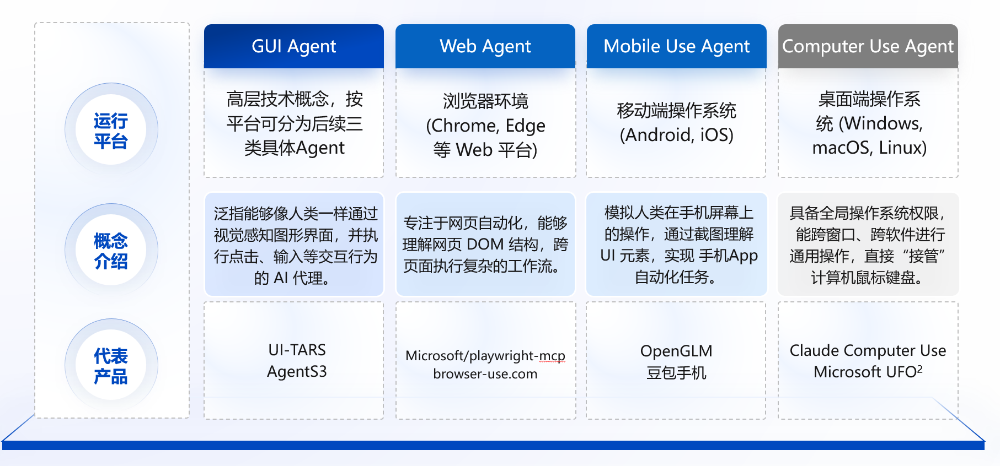
与传统自动化（RPA/浏览器自动化脚本）的区别
| 特性 | 传统自动化 (RPA/Selenium) | GUI Agent (AI) |
|---|---|---|
| 依赖基础 | 依赖底层代码（HTML ID, DOM 结构）或固定坐标 | 依赖视觉图像，像人眼一样看 |
| 适应性 | 极差。一旦 UI 改版或按钮位置移动，脚本就会报错 | 强。按钮换了位置或颜色，AI 依然认得那是"提交"按钮 |
| 通用性 | 专用的。针对特定软件编写特定脚本 | 通用的。同一个 Agent 可以学着买火车票，也可以学着发邮件 |
| 指令理解 | 只能执行预设的死命令 | 可以理解自然语言指令（模糊指令） |
| 处理异常 | 遇到未预设的弹窗通常会崩溃 | 可以根据弹窗内容尝试解决或绕过 |
工作原理
根据用户的指令，GUI Agent 通过一个迭代循环将感知、推理和操作整合在一起：
- 感知：计算机的屏幕截图被添加到模型的上下文中，提供计算机当前状态的视觉快照。
- 思考：GUI Agent 对下一步进行推理，同时考虑当前和过去的屏幕截图和操作。这种推理过程可使模型评估其观察结果、跟踪中间步骤并进行动态调整，从而提高任务性能。
- 行动：Agent 执行点击、滚动或键入等操作，直到确定任务已完成或需要用户输入。虽然它能自动处理大多数步骤，但对于敏感操作，如输入登录信息或回复验证码表单，GUI Agent 会寻求用户确认。
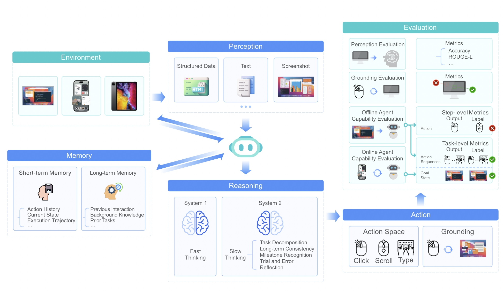
任务定义
给定用户的初始自然语言查询 $q_0$，GUI Agent 会根据环境状态，以多步骤的方式逐一输出动作，直到输出停止动作为止。
一条轨迹中的单个步骤 $t$ 包含三部分：
- 来自网页环境的观测（$o_t$）
- 对当前状态进行反思、并决定下一步该做什么的思考 / 思维链（$r_t$）
- 要执行的下一个动作（$a_t$）
一个任务对应的完整轨迹为：
$$\mathcal{T} = (q_0, \{o_0, r_0, a_0\}, \cdots, \{o_T, r_T, a_T\})$$
GUI Agent 对于步骤 $t$ 的预测：
$$P(r_t, a_t | q_0, \{o_0, r_0, a_0\}, \cdots, \{o_{t-1}, r_{t-1}, a_{t-1}\})$$
感知
基于 DOM 的
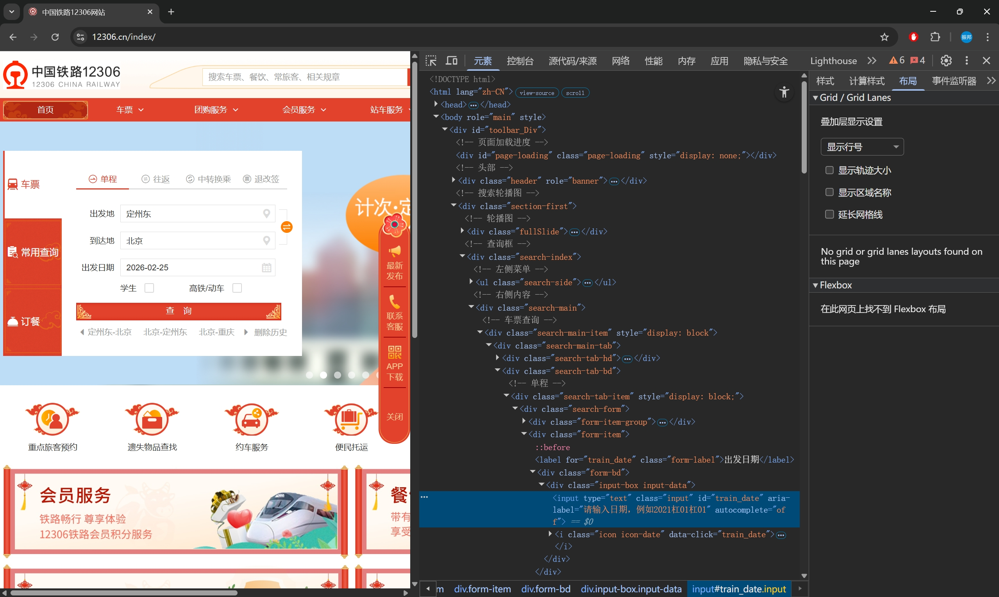
早期的 GUI Agent 受限于 LLM 只能处理文本输入的局限性。因此，这些代理依赖于将GUI页面转换为结构化的文本表示，例如HTML、可访问性树或文档对象模型（DOM）。
然而，DOM的缺点是内容过分冗余。比如，12306.cn主页的DOM文本消耗高达90万tokens。即使对DOM内容进行过滤裁剪，也需要消耗20万tokens。相比而言，一张截图仅消耗1000 tokens左右。
此外，DOM是不完备的。它不是网页的最终呈现，还受到CSS文件、业务逻辑JS代码的很大影响。
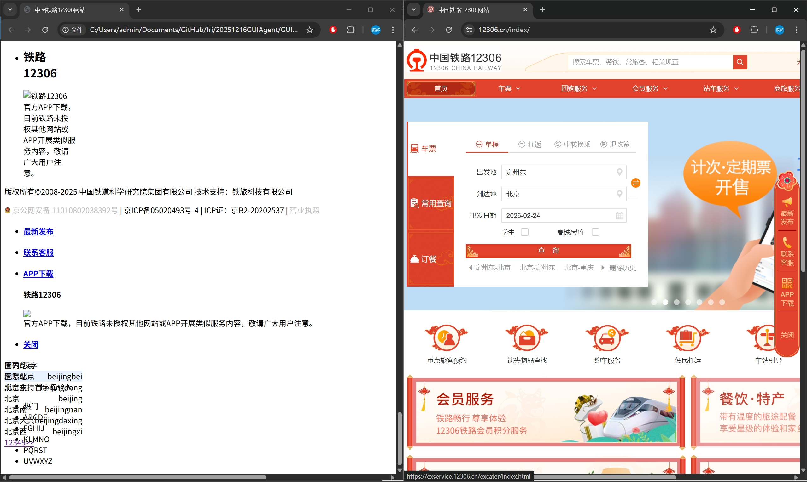
在收集操作轨迹训练数据时，图像数据具有极强的环境解耦属性，能够有效支持数据在互联网采集与内网标注平台之间的无损迁移。相比之下，单纯的DOM数据由于对外部样式资源及执行环境的强依赖性，在脱离原始网络上下文支持的情况下，无法在离线或隔离环境中精确复现原始交互界面，从而导致标注一致性的失效。
在 2025 年的一篇博客中，从技术视角分析了使用 DOM 作为感知方式的缺点。
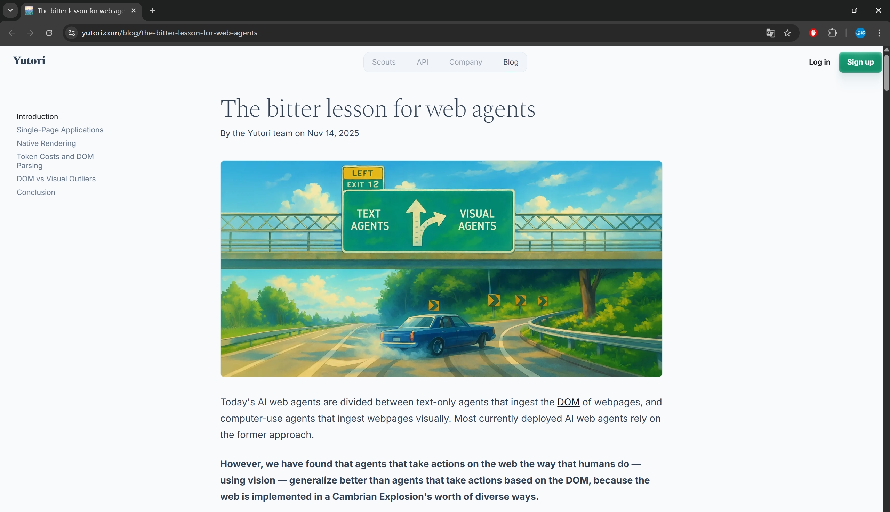
基于屏幕截图的
难点：GUI图像的信息密度和结构性通常比通用场景图像更高，往往包含数百个排列成复杂布局的元素。模型不仅要识别单个元素，还要理解它们的空间关系和功能交互。此外，GUI图像中的许多元素都很小（例如，在 $1920 \times 1080$ 的屏幕截图中的一个 $10 \times 10$ 像素的图标），这使得准确感知和定位这些元素变得困难。
为了解决这一问题，我们需要构建专门的GUI数据集和训练任务，对基线模型进行微调，从而提高大模型对于屏幕截图中元素感知与定位的准确性。
思考与行动
大模型将屏幕截图作为观测输入，首先输出思考内容，例如网页内容或当前状态，以及下一步要采取的行动。然后，根据这些思考内容，模型输出一个以工具调用形式表示的行动。
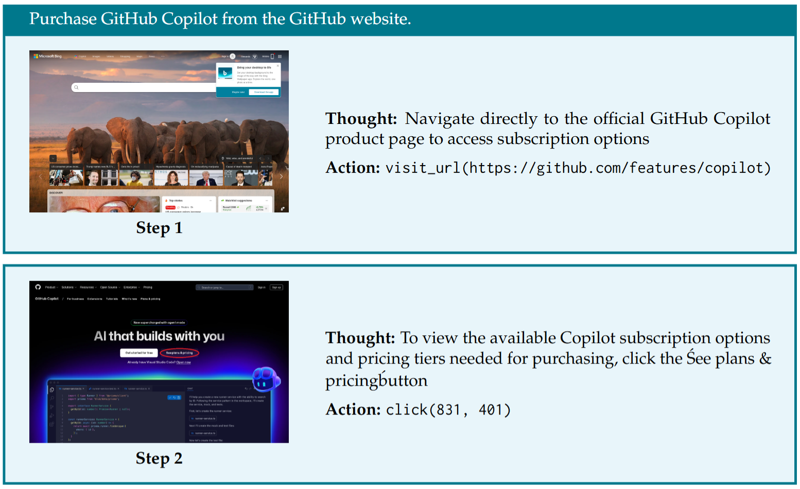
例如，用户希望 GUI Agent 自动执行任务：在 GitHub 网站上购买 Copilot 增值服务。
大模型首先观察到的是浏览器的初始界面。其思考内容是：应该导航至 GitHub Copilot 产品购买界面，然后执行对应动作。
接下来，大模型观察到已经进入到了指定页面，其思考内容是：应该点击"查看订阅计划及价格"链接。执行的动作为，点击该链接对应的坐标。
GUI Agent 能够执行的全部动作列举如下：
| 动作 | 描述 |
|---|---|
| 按键 | 按指定顺序按下按键（例如 *CTRL+C*）。 |
| 输入 | 在坐标 $(x, y)$ 处输入字符串。 |
| 移动鼠标 | 移动光标悬停在坐标 $(x, y)$ 上。 |
| 左键单击 | 在坐标 $(x, y)$ 处单击鼠标左键。 |
| 滚动 | 滚动鼠标滚轮。 |
| 访问链接 | 访问指定的 URL。 |
| 网络搜索 | 使用指定查询进行网络搜索。 |
| 历史回退 | 返回上一页。 |
| 记忆 | 记忆信息以供将来参考。 |
| 等待 | 等待指定的秒数。 |
| 终止 | 结束当前任务。 |
记忆
GUI Agent 能够存储在后续轨迹中可能有用的重要信息。当完成任务所需的关键信息位于不同页面时（例如，比较某一商品在不同零售网站上的价格），记忆功能不可或缺。
训练数据集构建与模型训练
未针对流程自动化任务训练的通用模型存在如下缺点：
- 屏幕截图属于领域性很强的图像，且要定位的元素很小，通用模型表现不佳。
- 完成流程自动化任务需要领域专门知识。比如，如果大模型不知道 GitHub Copilot 的产品购买页面对应的网址，便无法完整相关流程自动化任务。
为此，需要设计多种训练任务，通过对通用模型的微调，实现流程自动化的能力。
操作轨迹数据集
$$\mathcal{T} = (q_0, \{o_0, r_0, a_0\}, \cdots, \{o_T, r_T, a_T\})$$
$q_0$: 在 GitHub 网站上购买 Copilot 增值服务。
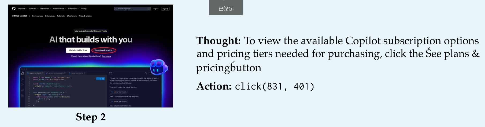
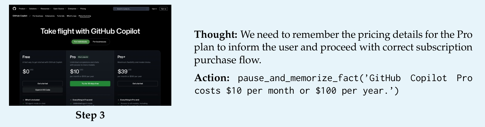
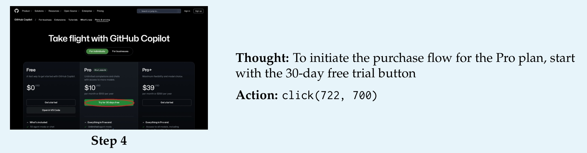
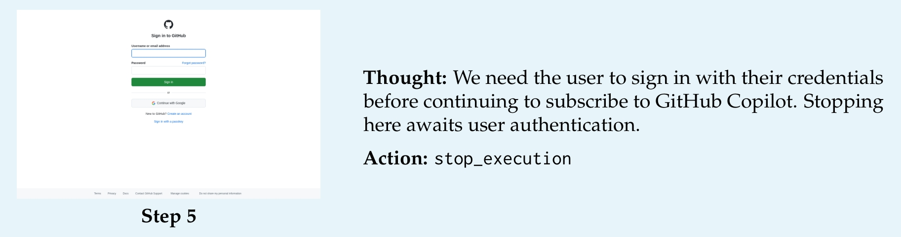
训练方式：将每条轨迹的每一步单独作为一个训练样本，把截至当前步骤的历史观测与动作作为模型输入。
使用 Qwen2.5-VL-7B 作为基座模型，并在其基础上进行监督微调（SFT）。
使用标准的交叉熵损失，所有输出都是模型词表中的 token，包括坐标。
除了轨迹数据外，训练 GUI Agent 还有要一些辅助任务，用于专项提高模型的定位和理解能力。
UI截图问答与描述任务
该任务用于提高模型从网页中提取信息的能力，并避免幻觉现象。
在该任务中，一条训练数据包括三部分：网页截图、用户查询、回答。
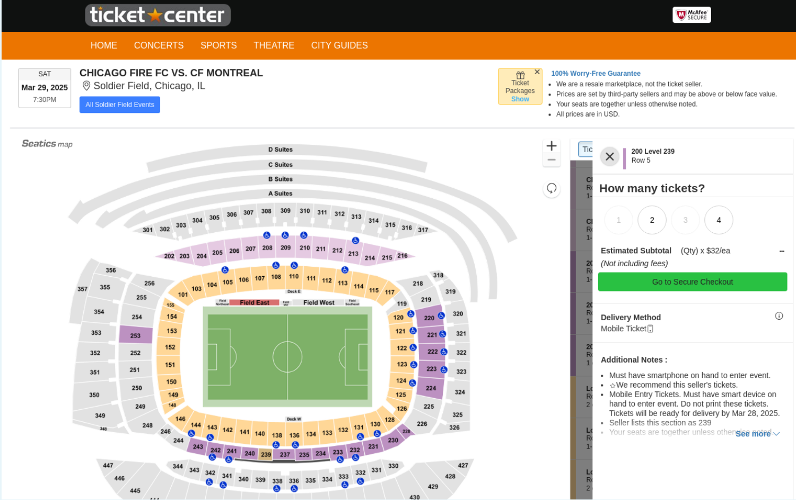
用户查询：门票的配送日期是？
回答：2025 年 3 月 28 日
UI定位任务
这是 GUI Agent 的一项基本子任务。目的是令模型准确识别截图中的特定元素，并能准确输出该元素的坐标。
对于UI定位任务，一条训练数据包括三部分：网页截图、用户查询、回答。
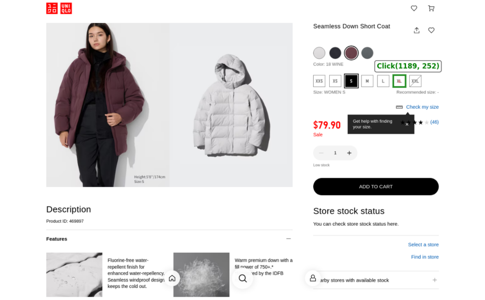
用户查询：点击衣服的 XL 尺寸
回答：click(1189, 252)
训练细节
- 优化器：AdamW，其参数设置为 $\beta_1 = 0.9, \beta_2 = 0.95$
- 学习率：在训练步数的前 10% 阶段采用余弦学习率预热策略；预热结束后，初始学习率设置为 $5\times 10^{-6}$
- 梯度裁剪：最大阈值设为 1
- 批次大小 = 128
- 参数精度：BF16
基线模型的选择
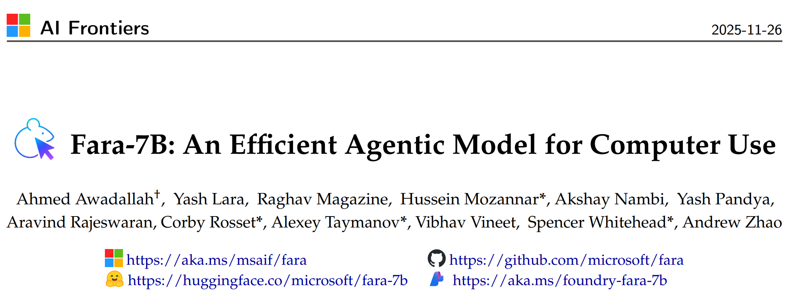
微软与2025年底提出的 Fara-7B，以 Qwen2.5-VL-7B 作为基座模型，并在其基础上进行监督微调（SFT），微调样本量为 180 万。
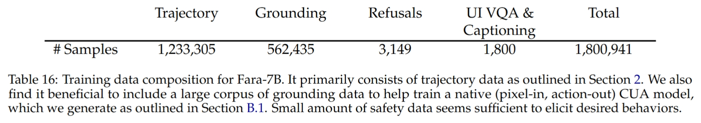
训练对于模型处理GUI自动化任务具有关键作用。
与 Fara-7B 类似的模型是 UI-Tars-1.5-7B。两者性能接近，但Fara-7B仅使用监督微调（SFT），而UI-TARS-1.5-7B则采用了强化学习（RL）。SFT是进一步微调的更经济的选择。
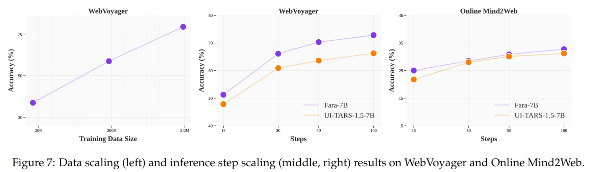
公安领域的模型增量微调
为提升 GUI Agent 在垂直领域的任务成功率，需构建针对公安业务场景的专用数据集，通过监督微调 (SFT) 引导模型学习特定系统的 UI 布局逻辑与业务流程。
首先，基于实际警务需求定义典型任务基准 (Benchmarks)，例如：人员身份信息核查、车辆轨迹溯源等交互任务。随后，利用基线模型自动化执行任务，评估其在公安业务系统上的初始泛化能力。
建立量化的评价体系，计算在benchmark上的任务成功率 (SR)。识别模型在视觉定位、意图推理或长序列决策中的性能瓶颈。
针对模型失效的任务，由标注员进行规范化操作，录制纠正的操作轨迹。该过程不仅捕捉屏幕截图与点击坐标，还需通过思维链（CoT）标注，显式记录每步操作背后的思考过程，从而构建高质量的专家演示数据集。
利用 SFT（监督微调）技术，引导模型学习公安业务系统的特有交互模式。
各种流程自动化方案的优缺点及适用场景
基于 DOM 的 Web Agent
直接读取网页源代码（DOM）进行分析与操作。
优点
- 能够获取网页全文、原始图像链接。
- 处理浮动元素时有优势。
缺点
- DOM 树通常非常庞大，会导致 Token 消耗极快。
- 难以针对特定网站收集训练数据并微调。
基于视觉感知的 GUI Agent
像人类一样"看"屏幕截图，通过坐标模拟点击。
优点
- 相比DOM，截图消耗的tokens数更少。
- 易于针对特定网站收集数据集并训练。
缺点
- 截图采样存在延迟，难以处理具有浮动元素的网页。
- 处理网页中的长文本和图像时不如DOM便利。
AI + RPA
利用 AI 自动生成 RPA 脚本，由传统 RPA 引擎执行。
优点
- 可验证性：生成的脚本可由人工审核优化，确保上线前的准确性。
- 运行高效：一旦脚本生成，执行阶段不再依赖大模型推理，速度极快且成本极低。
缺点
- 网站语义地图的构建难度：网页元素的抽象建模领域专业知识。即使想通过大模型进行构建，依然缺乏初始的专家知识。
传统流程自动化
固定规则编写的自动化程序。
优点
- 稳定：在预设路径下，成功率接近 100%，速度最快。
缺点
- 异常处理能力差：缺乏灵活性，遇到计划外的弹窗、广告或微小改动即会崩溃。
- 可复用性极低：每一个任务都需要单独开发，无法规模化。
场景与技术方案的匹配
高频重复、定义明确、速度要求高、AI算力受限的任务
方案：自动化脚本
理由：脚本一旦生成（并经过人工确认），运行速度最快且稳定，不需要为每一步支付 AI 推理费用。
需求模糊、任务随机
方案：基于 DOM 或视觉的 GUI Agent
理由：无需（也无法）预先编写流程自动化脚本。
图文数据抓取任务
方案：基于 DOM 的 Web Agent
理由：不通过OCR便可获取网页全量文本内容，且能获取在视觉上隐藏的图像下载链接。
针对特定系统构建数据集并微调
方案：基于视觉的 GUI Agent
理由：通过截图，持续收集 Agent 运行时的交互数据，可以不断微调模型，让模型在特定网站的操作越来越精准。
基于 Agent 调度的自适应 Web 自动化架构
当流程自动化任务启动时，负责任务调度的 Agent 首先执行资源检索，若发现存在与当前站点及任务相匹配的现成流程自动化脚本，则直接调用，从而确保较高的响应速度与稳定性。在缺乏现成脚本但拥有该站点"语义地图"的情况下，Agent 会利用预存的网页元素映射关系，以组装积木的方式即时构建出针对性的流程自动化脚本。
针对从未接触过的全新站点，系统将自动切换至自主感知模式。此时，DOM Agent 与视觉 GUI Agent 协同工作，利用多模态大模型实时解析网页结构并识别交互元素，确保系统具备在未知业务系统中"零配置"完成任务的能力，从而提高流程自动化的通用性。
一、 核心平台：OpenClaw/CoPaw
这一架构的落地依赖于 OpenClaw/CoPaw 这一类个人 AI 办公助手平台。这是一种将大模型能力与用户日常工作流深度融合的自动化平台，具备长期记忆、定时执行、跨设备同步及自定义技能扩展等核心特性。其典型应用场景涵盖：
- 本地文件与文档智能处理： 利用系统级权限，Agent 能自动完成文档归类、内容提取、格式转换及批量重命名，将重复的文件操作完全自动化。
- 资讯聚合与智能简报： 系统可自动抓取多源资讯（如 RSS、新闻、社交媒体），经 AI 筛选、去重并生成摘要，定时推送个性化日报，确保信息获取的高效精准。
- 动态数据监控： 通过连接业务 API，实时采集并分析数据趋势，为用户提供快速决策的决策支持。
二、核心机制：Skill
OpenClaw/CoPaw 之所以具备强大的扩展性，关键在于其核心机制——Skills（技能）。
什么是 Skill？
Agent Skills 是 Anthropic 在 2025 提出的一个概念，是一种将"操作流程"模块化的开放标准。Agent Skills 在底层被定义为一个符合标准化规范的文件夹，这个文件夹通常包含：
- SKILL.md： 这是核心文件，采用 Markdown 格式。它包含了该技能的简短描述（告诉 AI 什么时候该用它）、详细指令（具体怎么做）以及应用示例。
- 脚本和资源： 文件夹内可以包含 Python 脚本、Bash 脚本、API 定义或参考文档（如 REFERENCE.md）。
Skill 对比传统方案：
- 对比 System Prompt： Skill 将知识"外挂"，避免了长指令导致的模型"疲劳"。
- 对比工具调用 (Tools)： 工具侧重于执行动作，而 Skill 封装的是"策略"——它不仅能发邮件，还知道应采用何种风格、如何进行合规性审核。
- 对比 MCP (Model Context Protocol)： MCP 负责"获取数据"，而 Skill 负责"拿到数据后如何处理"。
三、将公安业务流程自动化脚本转化为 skill
要实现 Agent 对预置公安业务系统流程自动化脚本的自适应调度，核心方法是将脚本进行模块化处理，并封装至符合规范的 Skill 文件夹中。
第一步：创建技能文件夹结构
按照 Agent Skills 的标准，创建一个独立的文件夹（例如 traffic_violation_search）：
traffic_violation_search/ ├── SKILL.md # 技能描述文件（核心） ├── spider.py # 原始自动化业务逻辑代码 ├── cli_wrapper.py # 命令行包装器，方便 Agent 调用 └── requirements.txt # 依赖清单清单
第二步：编写 SKILL.md
这是 Agent 决定"何时"以及"如何"使用你脚本的关键。
# 交通/监控违法数据抓取技能 ## 描述 用于从内部视频综合图像平台自动化抓取特定时间段、特定地点的行人违法行为记录、OCR 识别图片并提取身份信息。 ## 使用场景 - 当用户询问"XX地点在XX时间有没有违法记录？"时。 - 需要批量导出特定区域的交通违法数据时。 ## 指令 1. 确保环境中已安装 Chromium 浏览器。 2. 调用 `python cli_wrapper.py` 并传入必要的参数。 3. 参数要求： - `start_time`: 格式 YYYY-MM-DD HH:mm:ss - `end_time`: 格式 YYYY-MM-DD HH:mm:ss - `place`: 具体的监控点位名称 ## 示例 用户问：帮我看看昨天下午两点到四点，工业路与新华路口的情况。 Agent 行动：执行 `python cli_wrapper.py --start "2025-05-20 14:00:00" --end "2025-05-20 16:00:00" --place "工业路与新华路"`
第三步：OpenClaw/CoPaw 调用
- 路径感知： 将该文件夹放到 OpenClaw/CoPaw 的 skills/ 目录下。
- 发现技能： 当用户在 OpenClaw/CoPaw 中下达相关任务时，OpenClaw/CoPaw 会扫描 SKILL.md。
- Agent 看到用户请求。
- Agent 匹配到 SKILL.md 中的描述。
- Agent 完整读取 SKILL.md 里的指令。
- Agent 自动生成并执行命令：python traffic_violation_search/cli_wrapper.py --start "..." --end "..." --place "..."。
落地方案
- Step1： 将 CoPaw 安装到内网
- Step2： 为 CoPaw 配置内网环境的大模型
- Step3： 验证 CoPaw 在内网的可用性和稳定性。
- Step4： 在内网跑通 CoPaw 的内置 skill 能力，例如通过执行word创建来实现。
- Step5： 编写专用的 Skill，实现对现有预置流程自动化脚本的成功调用。
- Step6： 编写针对"网页语义地图"解析的 Skill，实现脚本的动态组装与生成。
最终目标：
实现一个基于 OpenClaw/CoPaw 的公安专用办公助手，其功能包含了 OpenClaw/CoPaw 的全部功能，并针对流程自动化任务进行专门增强，灵活实现：
- 调用预置的公安业务系统的流程自动化脚本
- 根据公安业务系统的语义地图自动生成流程自动化脚本并执行
- 对于其他未适配的公安业务系统，执行通用的基于DOM的或基于视觉的 GUI Agent